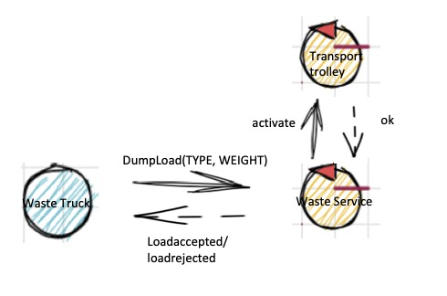
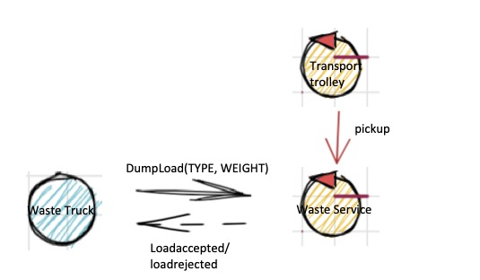
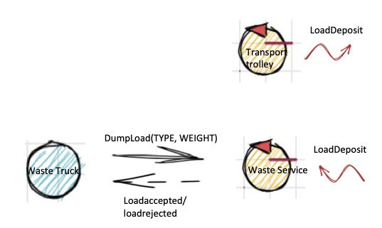

Introduction
Requirements
A company intends to build a WasteService for the separate collection of waste, composed of a set of elements:
a service area (rectangular, flat) that includes:
an INDOOR port, to enter waste material
a PlasticBox container, devoted to store objects made of plastic, upto MAXPB kg of material.
a GlassBox container, devoted to store objects made of glass, upto MAXGB kg of material.
The service area is free from internal obstacles, as shown in the following picture:

a DDR robot working as a transport trolley, that is intially situated in its HOME location. The transport trolley has the form of a square of side length RD.
The transport trolley is used to performa a deposit action that consists in the following phases:
pick up a waste-load from a Waste truck located on the INDOOR
go from the INDOOR to the proper waste container
deposit the waste-load in the container
a Service-manager (an human being) which supervises the state of the service-area by using a WasteServiceStatusGUI.
a Sonar and a Led connected to a RaspnerryPi. The Led is used as a warning devices, according to the following scheme:
the Led is off when the transport trolley is at HOME
the Led blinks while the transport trolley is moving
the Led is on when transport trolley is stopped.
The Sonar is used as an alarm device: when it measures a distance less that a prefixed value DLIMT, the transport trolley must be stopped. It will be resumed when Sonar detects again a distance higher than DLIMT.
TFRequirements
The main goal of the WasteService software is to allow a Waste truck to deposit its load of TruckLoad kg plastic or glass in the proper container.
The global story can be described as follows:
The Waste truck driver approaches the INDOOR and sends (using a smart device) a request to store the load, by specifyng the type of the material (plastic or glass) and its TruckLoad.
The WasteService sends the answer loadaccept if the final content of proper container will not surpass the maximum value allowed (MAXPB or MAXGB). Otherwise, it sends the answer loadrejecetd and the Waste truck leaves the INDOOR area.
When the load is accepted, the transport trolley reaches the INDOOR, picks up the material, goes to the proper container and settles the material. During this activity, the WasteService blinks the Led
When the deposit action is terminated, the transport trolley excutes another deposit command (if any) or returns to its HOME.
The WasteService must create a WasteServiceStatusGUI that shows to the Service-manager:
the current state of the transport trolley and it position in the room
the current weigth of the material stored in the two waste-containers
the current state of the Led
Requirement analysis
Requisiti funzionali¶
Requisiti riguardanti la funzionalità CORE del sistema-
Arrivo waste truck: Un waste truck si reca nella posizione indoor ed invia una richiesta per il deposito di un certo materiale (glass or plastic) e il carico che vuole depositare.
-
Accettato: nel caso in cui il carico che si vuole depositare sommato al carico attuale dell'apposito container non ecceda una determinata soglia (PMAX or GMAX), wasteService invia la risposta loadaccepted .
-
Respinto: nel caso in cui il carico che si vuole depositare sommato al carico attuale dell'apposito container ecceda una determinata soglia (PMAX or GMAX), wasteService invia la risposta loadrejected ed il wasteTruck libera l'area di INDOOR .
-
Ritiro: Nel caso in cui la richiesta sia stata accettata, il trolley deve recarsi ad INDOOR per prelevare il carico dal wasteTruck.
-
Deposito: Il trolley si reca all'apposito container per depositare il carico.
-
Fine deposito: quando il trolley termina il deposito, nel caso in cui ci siano altre richieste accettate, il trolley ripete la fase RITIRO descritta precedentemente, in caso contrario torna alla posizione HOME.
-
Led Off: nel caso in cui il trolley si trovi nella posizione HOME.
-
Led Blinks: mentre il trolley si sta muovendo.
-
Led On: quando il trolley è stoppato.
-
Sonar: nel caso in cui il sonar misuri una distanza minore di DLIMIT, il trolley deve essere stoppato. Verrà riattivato quando il sonar rileverà una distanza maggiore di DLIMIT
-
All'interno della GUI devono essere visibili le seguenti informazioni:
-
Trolley info: stato attuale del trolley e posizione attuale.
-
Peso container: il peso corrente di ciascun container.
-
Led info: stato attuale del led.
Requisiti non funzionali¶
-
Posizione iniziale: il trolley parte dalla posizione HOME.
-
Lunghezza del trolley: il trolley ha lunghezza di lato RD.
-
Proattività: il trolley deve muoversi in modo autonomo fino a compimento del lavoro.
-
Reattività: il committente ha prospettato la possibilità che il trolley sospenda il lavoro in caso di allarmi; in particolare, quando il sonar rileva una distanza minore di DLIMIT
-
Raspberry: il LED ed il SONAR devono essere collegati ad un RaspberryPI
Punti aperti¶
- Momento nella quale incrementare il peso contenuto nei container. Potrebbe essere incrementato sia nel momento in cui una richiesta viene accetata (loadaccepted), sia in seguito alla fase di RITIRO specificata nei requisiti funzionali, sia in seguito alla fase di FINE DEPOSITO.
- Concorrenza dei truck.
- In seguito a loadaccepted, il truck deposita il carico e se ne va immediatamente o aspetta l'arrivo del trolley per scaricare? Nel secondo caso si ha bisogno di notificare il truck quando il carico è stato preso dal trolley?
- Come si vuole realizzata la visualizzazione della posizione corrente del trolley?
- La mappa della stanza viene fornita?
- Le coordinate di INDOOR, e dei container sono conosciute?
Problematiche funzionalità CORE
Problematica Ritiro
Quando una richiesta da parte di un WasteTruck viene accettata (loadaccepted), si ha la necessità di comunicare al trolley di andare a prelevare il carico dall'area INDOOR.Problematica Ritiro effettuato
Quando il trolley effettua il ritiro dei materiali dal WasteTruck deve comunicare al WasteService di avere effettuato il ritiro.Problematica libera area di INDOOR
In seguito ad una loadaccepted bisogna decidere quando e come comunicare al WasteTruck di liberare l'area di INDOOR.Problematica Fine deposito
Quando il trolley deposita i materiali nel container deve comunicare di aver eseguita questa operazione.Problematica NuovoDeposito
Quando il trolley conclude il requisito FineDeposito e quindi deposita il carico nel container appropriato si ha la necessità di trovare un modo per poter verificare se sono arrivati nuovi WasteTruck nel frattempo.Problematica Posizioni Container
Quale componente deve essere a conoscenza delle posizioni dei container.Problematica Percorso trolley
Come fa il trolley a sapere il percorso da seguire partendo da una posizione iniziale per arrivare all'obiettivo.Problematica Peso Container
Quale componente possiede l'informazione del peso attuale dei container.Modello eseguibile analisi dei requisiti
Modello Analisi dei requisitiProblem analysis
Funzionalità CORE specificate nell'analisi dei requisiti
Problematica Ritiro
Architettura #1
In questa architettura WasteService comuni al transoport trolley di andare ad INDOOR attraverso l'utilizzo di un dispatch.
Caratteristiche della soluzione con dispatch:
- Semplicità: Risulta più semplice come soluzione.
- Comprensibilità: Risulta più facilmente comprensibile dato che risulta essere semplicemente un comando inviato dal wasteService al trolley.
Architettura #2

In questa seconda architettura si comunica al transport trolley di andare ad INDOOR attraverso l'utilizzo di un evento.
Caratteristiche della soluzione ad evento:
- Flessibilità: risulta molto semplice apportare modifiche. In particolare, nel caso fosse stato possibile avere più trolley, allora, sarebbe stato semplice aggiungere nuovi trolley e la decisione su quale trolley attivare non sarebbe stata in carico al WasteService.
- L'informazione sarebbe percettibile da un numero qualsiasi di osservatori interessati, senza che l'azione di osservazione comporti un cambiamento del WasteService. In particolare, risulterebbe semplice aggiungere nuovi componenti interessati a questo evento senza apportare nessuna modifica al WasteService stesso.
- Disaccoppiamento tra i due componenti: il WasteService non deve per forza conoscere il transport trolley con l'utilizzo di un evento.
- Problemi nella comunicazione: nel caso ci siano problemi nella comunicazione l'evento viene perso.
Architettura #3
In questa terza architettura si comunica al transport trolley di andare ad INDOOR attraverso l'utilizzo di una request.
Caratteristiche della soluzione con request/response:
- Si evitano i problemi in caso di errori di comunicazione che si avevano con la soluzione ad evento.
- La semantica del messaggio di activate non necesiterebbe veramente di una risposta da parte del trolley.
Note
- Dato che il commitente non ha specificato che ci sia la possibilità di trolley multipli si sconsiglia la soluzione ad evento.
Problematica Ritiro effettuato
Architettura #1

In questa prima architettura il transport trolley emette un evento quando ha effettuato il ritiro del carico.
Caratteristiche della soluzione ad evento:
- L'informazione sarebbe percettibile da un numero qualsiasi di osservatori interessati, senza che l'azione di osservazione comporti un cambiamento del Transport Trolley. In particolare, risulterebbe semplice aggiungere nuovi componenti interessati a questo evento senza apportare nessuna modifica al Transport Trolley stesso.
- Problemi nella comunicazione: nel caso ci siano problemi nella comunicazione l'evento viene perso.
Architettura #2
In questa seconda architettura il transport trolley invia un dispatch quando ha effettuato il ritiro del carico.
Il problema principale di questa soluzione è che si costringe il trolley ad avere conoscenza del WasteService, andando ad accoppiare i due componenti. Si perde anche la possibilità di realizzare il trolley come un attuatore di comandi esterni, che non ha conoscenza dei componenti esterni.
Architettura #3
In questa terza architettura il WasteService, subito dopo aver "attivato" il trolley per andare ad INDOOR, invia una richiesta per verificare se ha effettuato il ritiro. Quando il trolley esegue il ritiro risponde alla richiesta.
Questa soluzione permette di sfruttare il vantaggio di quella ad eventi, dove il trolley non è a conoscenza del wasteService; inoltre, si risolve il problema nel caso la comunicazione non avvenga in modo corretto, dato che il wasteService non riceverà una risposta da parte del trolley.
Nel caso in cui per risolvere il problema Ritiro si utilizzi la soluzione #3 (request/response), è possibile sfruttare il messaggio di response per comunicare di aver eseguito il pickup.
Problematica Fine Deposito
Architettura #1
Architettura #2

Architettura #3
Si hanno i problemi menzionati in precedenza per quanto riguarda il tipo di messaggio. Come conseguenza di fine deposito il WasteService deve anche incrementare il peso corrente del carico dei container.
Problematica Nuovo Deposito
Soluzione #1
Si può sfruttare il fatto che il transport trolley sia un attore con una coda associata e nel caso in cui il WasteService accetti una richiesta, deposita un messaggio nella coda del trolley, a prescindere dallo stato in cui esso si trovi. La richiesta verrà processata quando il trolley finisce il deposito precedente. Nel caso non ci sia nessuna richiesta, tornerà nella posizione HOME.Note
- Dato che un nuovo wasteTruck può arrivare solamente nel caso in cui l'area di INDOOR sia libera, questo significa che in coda al trolley si può trovare al più una richiesta.
Soluzione #2
Il wasteService può aspettare a depositare il messaggio nella coda del trolley e quando il trolley termina un deposito invia un messaggio per sapere se è presente una nuova richiesta.Nel caso si utilizzi una richiesta per segnalare la fine del deposito (problematica precedente) è possibile utilizzare la response per segnalare se siano presenti nuove richieste.
Nel caso nella problematica fine deposito si utilizzi un evento o un dispatch, il WasteService deve inviare un messaggio per specificare se siano presenti nuove richieste di deposito o meno.
Note
Il problema di questa soluzione è che si aggiunge una dipendenza tra i componenti e potrebbe causare alcuni problemi aggiuntivi. Nel caso della soluzione ad evento si ha sempre il problema in cui ci siano dei problemi durante l'invio del messaggio. Questo porterebbe gravi conseguenza.Nella soluzione con dispatch e request il trolley sarebbe costretto a conoscere il WasteService.
Problematica libera area INDOOR
Il WasteTruck deve liberare l'area di INDOOR dopo che è stato prelevato il carico dal trolley.Per quanto riguarda come comunicarlo si ha:
Soluzione #1
Il WasteService invia un messaggio di Dispatch per comunicare che il carico è stato prelevato.
Soluzione #2
Si può sfruttare la risposta al messaggio di loadaccepted per comunicare al wasteTruck che il carico è stato prelevato e che può liberare l'area di INDOOR.Note
La prima soluzione risulta essere più comprensibile rispetto alla seconda, anche se utilizza un messaggio in più.Problematica Posizioni Container
Soluzione #1
Può essere il WasteService che conosce la posizione dei container e comunica al trolley (quando deve attivarsi) in quali coordinate andare.Soluzione #2
Può essere il trolley stesso ad essere a conoscenza della posizione dei container. Il problema di questa soluzione è il fatto che si va a cablare la posizione dei container direttamente all'interno del trolley e si perde la possibilità di realizzare il trolley come un semplice attuatore.Soluzione #3
Può essere un terzo componente ad avere questa informazione. Nel caso l'informazione sia in un terzo componente si può avere il wasteService che chiede la posizione al componente aggiuntivo e la invia al trolley oppure può essere il trolley, che una volta ricevuta dal wasteService la posizione da raggiungere, chieda al componente le coordinate dell'obiettivo.Vantaggi:
- Scalabilità: nel caso si voglia aggiungere una nuova posizione o cambiare le coordinate di una esistente basta semplicemente modificare il nuovo componente senza che vada ad influire in nessun modo con il resto dei componenti
- Nel caso della soluzione dove si ha il WasteService che chiede le coordinate al componente aggiuntivo si continua a vedere il trolley come un attuatore.
Problematica percorso trolley
Per non cablare l'informazione del percorso direttamente all'interno del trolley è possibile:Soluzione #1
Fare in modo che il wasteService conosca il percorso da seguire e invii il percorso tramite messaggio al trolley. In questo caso non sarebbe nemmeno necessario inviare le coordinate dei container al trolley.Soluzione #2
Utilizzare un componente esterno che conosca (e possibilmente possa trovare) il percorso. In questo caso, il wasteService potrebbe chiedere il percorso ed inviarlo direttamente al trolley continuando a pensarlo come un attuatore oppure potrebbe essere il trolley a chiedere quale sia il percorso al terzo componente.Il vantaggio che si ottiene facendo comunicare il wasteService con il componento aggiuntivo è quello citato in precedenza, vale a dire, la possibilità di disaccoppiare il trolley dalla logica di business. Lo svantaggio che si ha è nel caso in cui ci siano lunghi percorsi da comunicare al trolley, dovendo inviare messaggi di grandi dimensioni.
Note
Dato che all'interno di un magazzino sembra improbabile avere percorsi di grandi dimensioni si consiglia la soluzione dove il trolley viene considerato come un attuatore.Problematica peso container
Soluzione #1
Può essere il wasteService stesso a tenere il peso dei container.Soluzione #2
Può essere un componente esterno (container) che tiene traccia del peso del container. Inoltre, si può avere un componente per ogni container nel sistema oppure un unico componente che tiene traccia del peso di tutti i container.Soluzione proposta
L'idea principale di questa soluzione è quella di rendere il trolley un attuatore, senza che abbia conoscenza degli altri componenti.Per risolvere il problema Ritiro e RitiroEffettuato viene utilizzato una request/response per comunicare al trolley di iniziare il compito Proattivo (activate) e la response viene utilizzata per comunicare di avere eseguito il pickup.
Per comunicare al WasteTruck di liberare l'area di input in seguito al pickup da parte del trolley viene utilizzato un messaggio di Dispatch da parte di WasteService.
Per comunicare al WasteService di avere terminato il deposito, il trolley invia un evento (LoadDeposit).
Infine, per quanto riguarda la problematica Nuovo Deposito si adotta la soluzione #1, dove le richieste vengono messe in code al trolley appena vengono accettate dal WasteService.